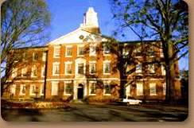
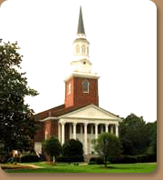
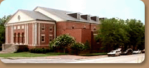
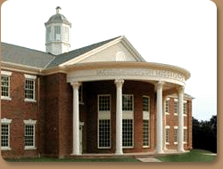

History of Southeastern Seminary
www.SEBTS.edu
Southeastern Baptist Theological Seminary became a reality on May 19, 1950, by vote of the Southern Baptist Convention meeting in Chicago, Illinois. To house the Seminary, the Convention purchased the campus of Wake Forest College in Wake Forest, North Carolina recognized then and now as one of the most beautiful in the South. But more than beauty, the campus claimed a Baptist heritage. The property was originally obtained in 1832 by the Baptists of North Carolina in order to build a college for educating ministers.
 Trustees, elected by the Convention, secured a charter and adopted the Abstract of Principles as the Seminary's Articles of Faith. Next they elected the Seminary's first president, Dr. Sydnor L. Stealey.
In the Fall of 1951, Southeastern began classes. Opening day, September 12, was attended by 85 students and three faculty members. The Seminary met in the classroom building now known as Appleby Hall on the Wake Forest campus. At first, the Seminary offered only a basic theological program leading to a Bachelor of Divinity degree.
In 1956, when Wake Forest College moved to its new location in Winston-Salem, NC, Southeastern inherited the rest of the Wake Forest campus which covered five hundred acres and consisted of more than twelve major buildings. The number of faculty members and students grew and plans to remodel and renovate buildings were initiated. In 1957, Southeastern instituted a summer school session.
In 1958, the Seminary achieved recognition from the American Association of Theological Schools, now known as the Association of Theological Schools in the United States and Canada.
In 1963, after thirteen years of devoted service, Dr. Stealey retired and Dr. Olin T. Binkley was elected president. Enrollment stood at 575 and the school had 28 faculty members.
 Under Dr. Binkley's leadership the Seminary continued the renovation program begun by Dr. Stealey. Four outdated buildings were removed, and thirteen new buildings were constructed and paid for all during Dr. Binkley's eleven year administration.
Dr. Binkley also guided major academic changes: the general curriculum was revised; the Bachelor of Divinity degree became the Master of Divinity degree; the Master of Religious Education and the Doctor of Ministry degrees were implemented, bringing the total number of degree programs to seven. Furthermore, he inaugurated the annual Alumni Giving Program before his retirement in 1974.
Southeastern's third president, Dr. W. Randall Lolley, was elected in 1974. Enrollment had reached 663 with 24 elected faculty members. His was an era of progress for the Seminary. The Certificate of Theology was restructured in 1976 and became the Associate of Divinity degree. In 1977, the Emery B. Denny Building which houses the Library was modernized and enlarged. And, in 1978, Southeastern received accreditation by the Southern Association of Colleges and Schools.
To meet the needs of an ever-increasing married student population, the Seminary constructed 100 townhouse-style apartments in 1979. Renovation of Lea Laboratory, now known as Broyhill Hall, was begun in 1980. In 1982, the ground floor of Binkley Chapel was transformed into classrooms.
 Seminary enrollment peaked at 1,392 in 1983 with a faculty of 36. The modernization of Adams Hall in 1984 provided the Seminary with more classrooms, seminar rooms, an auditorium, and a photography darkroom. The Ledford Center, a $2.5 million complex completed in 1986, provided a gymnasium, snack bar, lounges, meeting rooms, book store, sauna and exercise rooms.
Dr. Lolley resigned in the Fall of 1987 and was succeeded in 1988 by Dr. Lewis A. Drummond. The Drummond presidency marked a transitional era for Southeastern. Student enrollment declined and a major turnover occurred within the faculty. Nevertheless, Dr. Drummond led in an administrative restructuring of the Seminary in 1988 and in the establishment of the Center for Great Commission Studies in 1991. Reconstruction of the perimeter rock wall, replacement of the brick walkways, and a major refurbishment of administrative and faculty offices also were begun. Southeastern's commitment to biblical inerrancy and to historic Baptist theological principles was made clear during the Drummond years. Several new defining documents such as the Seminary's Faculty Profile and revised Statements of Purpose and Mission were finalized and adopted in 1992.
For the academic year, 1990-1991, the enrollment stood at 784 with 27 elected faculty members. President Drummond retired in the Spring of 1992.
Trustees elected Dr. Paige Patterson as the fifth President of the institution in 1992. The Patterson presidency was marked by rapid growth. Southeasterns enrollment grew from 623 in the 1991-1992 school year to more than 2,000 in 1999-2000. Curriculum revisions in 1994 brought about a more traditional theological degree plan for most Seminary students.
In the Fall of 1994 Southeastern Baptist Theological College was established by the Trustees of Southeastern Baptist Theological Seminary. Classes in the Baccalaureate program began in January of 1995. In addition, the Associate of Divinity program became part of the College curriculum. In April 2000 by action of the Board of Trustees, the name of the college was changed to Southeastern College at Wake Forest.
 Innovative new Seminary programs in Counseling and Church Planting were begun in 1995. A Doctor of Philosophy degree was also inaugurated in 1995. The academic emphasis, however, has not overshadowed the renewed focus on missions and evangelism. 1998 brought new programs in Women's Studies and Advanced Biblical Studies, as well as an expanded undergraduate program. 1999 brought new programs in Christian School Administration, North American Church Planting, and an advanced degree in Theological Studies.
In July of 2003, Dr. Patterson stepped down as Southeastern's president.
Vice President of Institutional Advancement Bart Neal was elected by the Board of Trustees as interim president as the Board of Trustees conducted a worldwide search for Southeastern's sixth president.
That search ended on January 15, 2004, when the Board unanimously elected Dr. Daniel L. Akin as president. Dr. Akin, who previously served at Southeastern as Assistant Professor of Theology and Dean of Students from 1992-1996, was Vice President for Academic Administration / Dean of the School of Theology at The Southern Baptist Theological Seminary in Louisville, KY, a position he held until his return to Southeastern.
The future has never been brighter for Southeastern. The school is in the midst of a $50 million fundraising campaign, called "Scholarship on Fire!", that will provide for the construction of the new Patterson Student Center and a new library, as well as scholarships and endowed professorships.
For more information about Southeastern Seminary go to the website: www.sebts.edu.